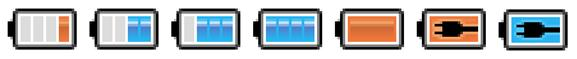
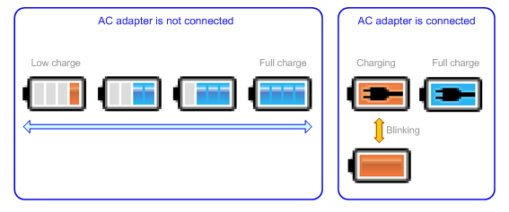
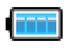
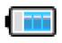
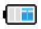
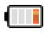
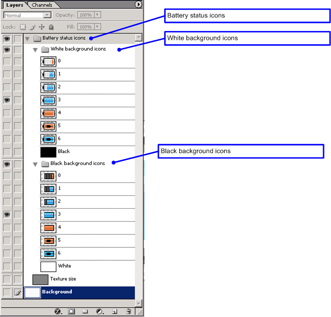

This document describes graphics data specifications for battery status icons used on the CTR HOME Menu. Battery status icons are used to display the battery level and whether the CTR system is connected to an AC adapter. There are a total of seven icon images.

With CTR, you can return to the HOME Menu at any time while an application is running. Because you can check the battery level and charging status on the HOME Menu, applications are not required to display battery status icons. If you are displaying battery status icons for an application, you are not required to use the battery status icons supplied with CTR-SDK. As such, there is no problem creating your own battery status icons to match the look and feel of your application. Furthermore, there is no problem with not displaying battery status icons, depending on software attributes.
If you use the battery status icons supplied in CTR-SDK with an application, be sure to implement them so that their behavior is the same as the battery status icons found on the HOME Menu. Otherwise, the user may become confused as to why the behavior of icons within the application differs from that of icons on the HOME Menu, even though they appear to be identical. Make sure that behavior is consistent to avoid such confusion. For more information, see the display of each icon described later and the functions related to their display.
The following figure shows the status relationships when displaying battery status icons. Refer to this figure when implementing battery status icons within an application. AC plug connection status can be obtained using the nn::ptm::CTR::GetAdapterState function.
Charging status can be obtained using the nn::ptm::CTR::BatteryChargeState function.
Figure 3-1 State Transition Diagram for Battery Icons

The battery status can be obtained using the nn::ptm::CTR::GetBatteryLevel function. The correspondence between the icon to be displayed and the return value of the nn::ptm::CTR::GetBatteryLevel function when an AC adapter is not connected is given below.
| Remaining Battery Life | Icon |
|---|---|
|
BATTERYLEVEL_5 (60% or more – 100% or less) |
 |
|
BATTERYLEVEL_4 (30% or more – 60% or less) |
 |
|
BATTERYLEVEL_3 (10 % or more – 30 % or less) |
 |
|
BATTERYLEVEL_2 (5% or more – 10% or less) |
 |
|
BATTERYLEVEL_1 BATTERYLEVEL_0 (0% or more – 5% or less) |
(blinking) |
Distributed battery status icon data is provided in .psd format. Convert this data to the format best suited for your application development environment. Image data files are located in the following directory in CTR-SDK. $CTR_SDK/resources/icon/BatteryLevelIcon
Two types of background colors are provided: one black and one white. Select the appropriate file for your project.

Icons cannot be modified. Do not switch to original colors or make changes to the image pattern.
There is no problem with adding a mask to the icon background for the purpose of increasing icon visibility. There are no specifications or restrictions on the design of this mask.
CONFIDENTIAL